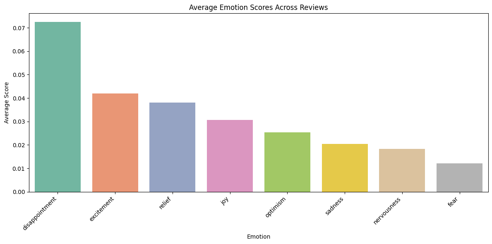
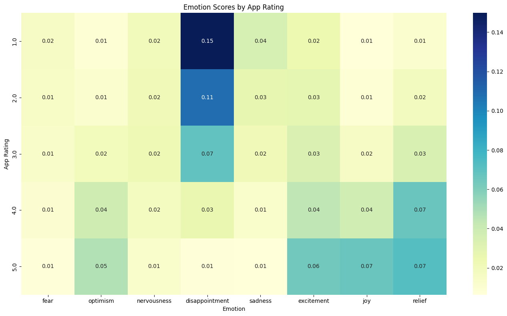
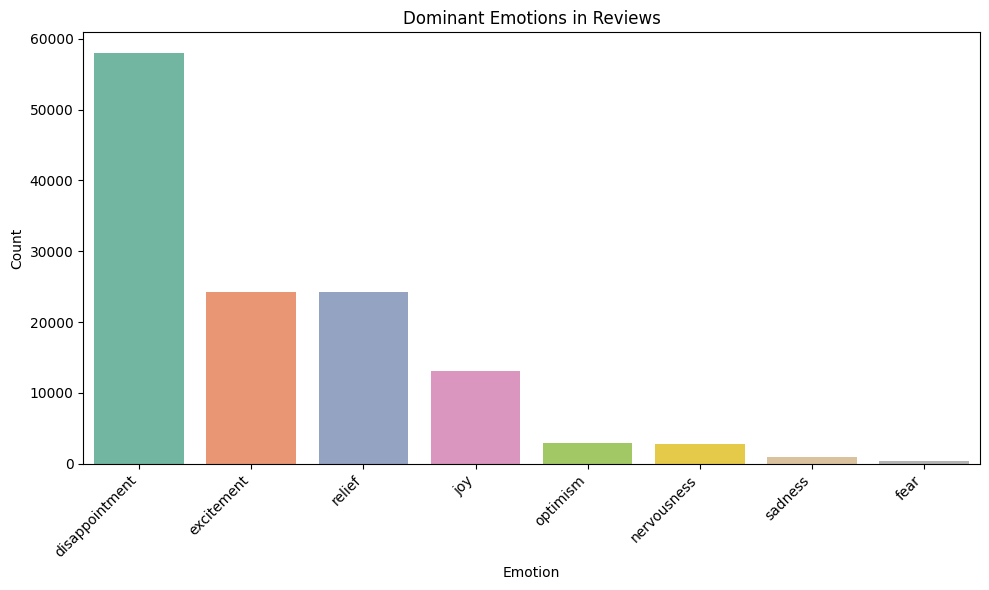
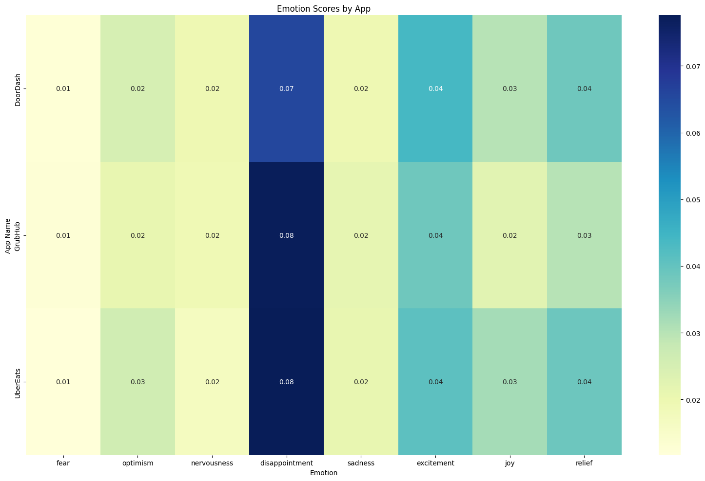
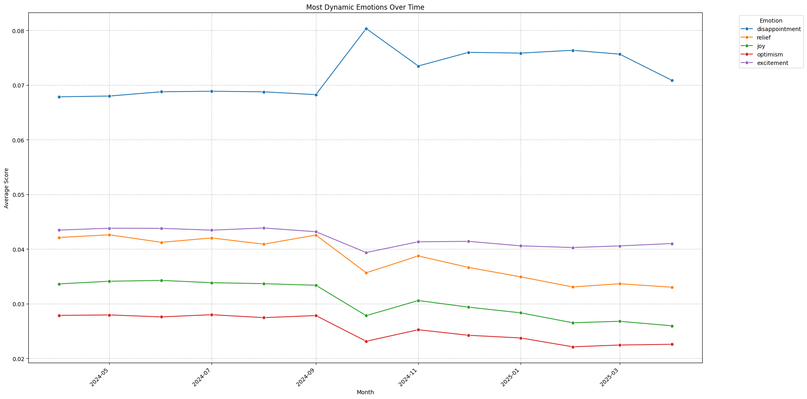
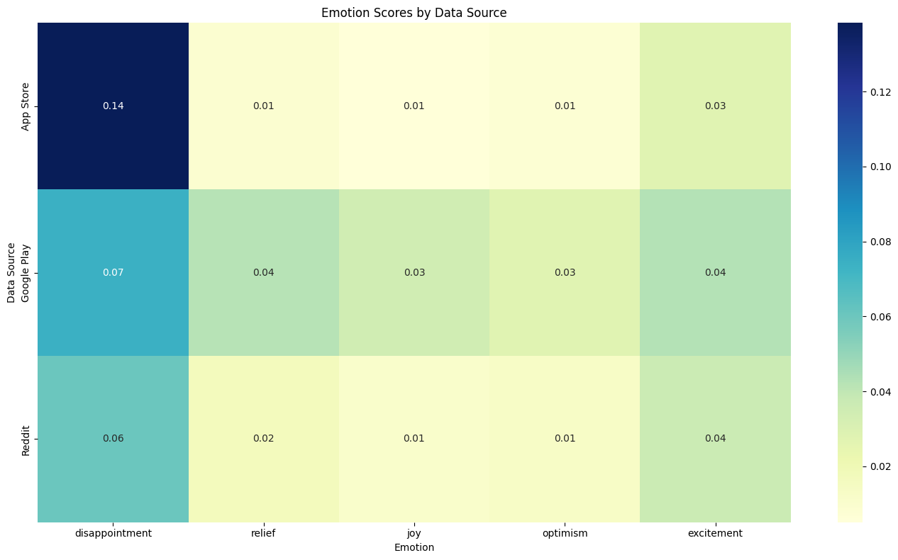
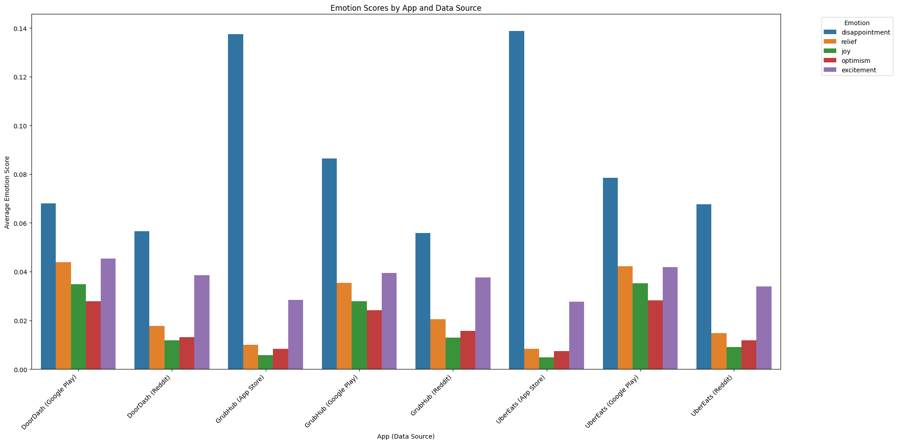
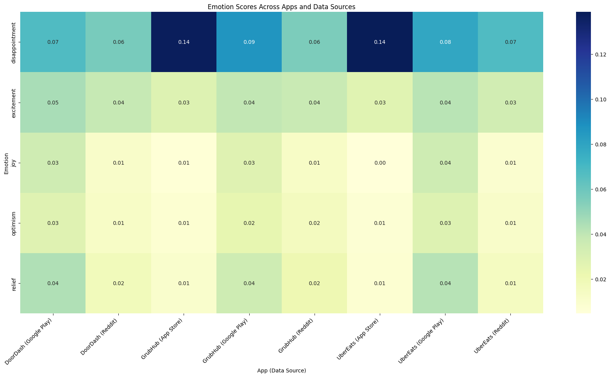

Device set to use cuda:0Emotion Analysis of Reviews
Processing 126725 reviews in 3961 batches...Token indices sequence length is longer than the specified maximum sequence length for this model (518 > 512). Running this sequence through the model will result in indexing errorsFound 397 reviews longer than the maximum token length of 512.
These reviews will be automatically truncated during processing.You seem to be using the pipelines sequentially on GPU. In order to maximize efficiency please use a datasetAverage emotion scores across all reviews
Average emotion scores across all reviews:
disappointment 0.072520
excitement 0.041951
relief 0.038141
joy 0.030576
optimism 0.025321
sadness 0.020504
nervousness 0.018222
fear 0.012035
anxiety 0.000000
hope 0.000000
worry 0.000000
dread 0.000000
confidence 0.000000
dtype: float64Average Emotion Scores Across Reviews
Code
#Bar plot for average emotion scores across reviews
plt.figure(figsize=(12, 6))
sns.barplot(x=avg_emotions.index, y=avg_emotions.values,palette='Set2')
plt.xticks(rotation=45, ha='right')
plt.title('Average Emotion Scores Across Reviews')
plt.xlabel('Emotion') # <-- added x-axis label here
plt.ylabel('Average Score')
plt.tight_layout()
plt.show()FutureWarning:
Passing `palette` without assigning `hue` is deprecated and will be removed in v0.14.0. Assign the `x` variable to `hue` and set `legend=False` for the same effect.
sns.barplot(x=avg_emotions.index, y=avg_emotions.values,palette='Set2')
Disappointment is the most prominent emotion, indicating a generally unsatisfactory customer experience. While positive emotions like excitement, relief, and joy appear next, their scores lag behind, showing mixed but leaning-negative sentiment.
Emotion Scores by App Rating
Code
# Analyze emotions by app rating (if app_rating column exists)
if 'app_rating' in result_df.columns:
print("\nAnalyzing emotions by app rating...")
# Step 1: Group by rating and calculate average emotion scores
emotions_by_rating = result_df.groupby('app_rating')[emotion_cols].mean()
# Step 2: Remove columns where all values are zero
emotions_by_rating = emotions_by_rating.loc[:, (emotions_by_rating != 0).any(axis=0)]
# Plot heatmap
plt.figure(figsize=(14, 8))
sns.heatmap(emotions_by_rating, cmap='YlGnBu', annot=True, fmt='.2f')
plt.title('Emotion Scores by App Rating')
plt.xlabel('Emotion')
plt.ylabel('App Rating')
plt.tight_layout()
plt.show()
Analyzing emotions by app rating...
The heatmap clearly shows that disappointment is strongly associated with low ratings (1–2 stars), while positive emotions like excitement, joy, and relief become more prominent in higher-rated reviews (4–5 stars). This trend highlights that emotional tone closely mirrors customer satisfaction levels, with disappointment being a key indicator of negative app experiences.
Dominant emotion counts:
dominant_emotion
disappointment 58007
excitement 24286
relief 24275
joy 13105
optimism 2951
nervousness 2813
sadness 982
fear 306
Name: count, dtype: int64Dominant Emotions in Reviews
Code
#Dominant emotions in reviews bar plot
plt.figure(figsize=(10, 6))
sns.barplot(x=emotion_counts.index, y=emotion_counts.values, palette='Set2')
plt.title('Dominant Emotions in Reviews')
plt.ylabel('Count')
plt.xlabel('Emotion')
plt.xticks(rotation=45, ha='right')
plt.tight_layout()
plt.show()FutureWarning:
Passing `palette` without assigning `hue` is deprecated and will be removed in v0.14.0. Assign the `x` variable to `hue` and set `legend=False` for the same effect.
sns.barplot(x=emotion_counts.index, y=emotion_counts.values, palette='Set2')
Disappointment is the dominant emotion in the majority of reviews, significantly outpacing all other emotional categories. Excitement and relief also appear frequently, suggesting some positive experiences. However, the imbalance highlights that customer dissatisfaction is a core theme across feedback platforms
Emotion Scores by App
Code
# Analyze emotions by app name (if app_name column exists)
if 'app_name' in result_df.columns and len(result_df['app_name'].unique()) > 1:
print("\nAnalyzing emotions by app name...")
# Step 1: Group by app name and calculate average emotion scores
app_emotions = result_df.groupby('app_name')[emotion_cols].mean()
# Step 2: Remove columns where all values are zero
app_emotions = app_emotions.loc[:, (app_emotions != 0).any(axis=0)]
# Step 3: Plot heatmap
plt.figure(figsize=(16, 10))
sns.heatmap(app_emotions, cmap='YlGnBu', annot=True, fmt='.2f')
plt.title('Emotion Scores by App')
plt.xlabel('Emotion')
plt.ylabel('App Name')
plt.tight_layout()
plt.show()
Analyzing emotions by app name...
Disappointment is the leading emotion across DoorDash, Grubhub, and UberEats, with Grubhub and UberEats displaying slightly higher levels. Positive emotions like excitement, joy, and relief appear consistently but are less dominant. This indicates a shared challenge across platforms in fully meeting customer expectations.
Most Dynamic Emotions Over Time
Code
# Analyze emotions over time if datetime column exists
if 'review_datetime' in result_df.columns:
try:
print("\nAnalyzing emotions over time...")
# Convert to datetime if it's not already
if not pd.api.types.is_datetime64_any_dtype(result_df['review_datetime']):
result_df['review_datetime'] = pd.to_datetime(result_df['review_datetime'], errors='coerce')
# Create a month column for grouping
result_df['month'] = result_df['review_datetime'].dt.to_period('M')
# Group by month and calculate average emotion scores
monthly_emotions = result_df.groupby('month')[emotion_cols].mean()
# Remove emotions with all zero values
monthly_emotions = monthly_emotions.loc[:, (monthly_emotions != 0).any(axis=0)]
# Convert 'month' to timestamp
monthly_emotions.index = monthly_emotions.index.to_timestamp()
# ✨ NEW: Select only emotions with highest variability (standard deviation)
emotion_std = monthly_emotions.std().sort_values(ascending=False)
top_emotions = emotion_std.head(5).index # Pick top 5 emotions with most variation
# Filter to only those emotions
monthly_emotions = monthly_emotions[top_emotions]
# Reshape data for seaborn
monthly_emotions_long = monthly_emotions.reset_index().melt(id_vars='month', var_name='Emotion', value_name='Average Score')
# Plot using Seaborn
plt.figure(figsize=(20, 10))
sns.lineplot(data=monthly_emotions_long, x='month', y='Average Score', hue='Emotion', marker='o')
plt.title('Most Dynamic Emotions Over Time')
plt.ylabel('Average Score')
plt.xlabel('Month')
plt.xticks(rotation=45, ha='right')
plt.grid(True, linestyle='--', alpha=0.7)
plt.legend(title='Emotion', bbox_to_anchor=(1.05, 1), loc='upper left')
plt.tight_layout()
plt.show()
except Exception as e:
print(f"Could not create emotions over time chart: {e}")
Analyzing emotions over time...
Disappointment consistently remains the dominant emotion over time, peaking sharply around September 2024. Positive emotions such as relief, joy, and optimism decline steadily after mid-2024, suggesting a gradual deterioration in user satisfaction. Excitement shows relatively stable trends throughout the period.
Heatmap for Emotion Scores by Data Source
Code
# Analyze emotions by data source if 'data_source' column exists
if 'data_source' in result_df.columns:
try:
print("\nAnalyzing emotions by data source...")
# Group by data_source and calculate average emotion scores
source_emotions = result_df.groupby('data_source')[emotion_cols].mean()
# Remove emotions with all zero values
source_emotions = source_emotions.loc[:, (source_emotions != 0).any(axis=0)]
# ✨ Select most dynamic emotions (optional: top 5 by std deviation)
emotion_std = source_emotions.std().sort_values(ascending=False)
top_emotions = emotion_std.head(5).index
# Filter only top emotions
source_emotions = source_emotions[top_emotions]
# Plot heatmap
plt.figure(figsize=(14, 8))
sns.heatmap(source_emotions, cmap='YlGnBu', annot=True, fmt='.2f')
plt.title('Emotion Scores by Data Source')
plt.xlabel('Emotion')
plt.ylabel('Data Source')
plt.tight_layout()
plt.show()
except Exception as e:
print(f"Could not create emotion comparison heatmap: {e}")
Analyzing emotions by data source...
Disappointment is most pronounced in App Store reviews, indicating a higher level of dissatisfaction compared to Google Play and Reddit. Google Play reviews show a more balanced emotional spread, while Reddit displays lower overall emotional intensity. This highlights that App Store feedback tends to be more emotionally charged and negative.
Bar Plot for Emotion Scores by App and Data Source
Code
# Analyze emotions by app and data source
if 'app_name' in result_df.columns and 'data_source' in result_df.columns:
try:
print("\nAnalyzing emotions by App and Data Source (Bar Plot)...")
# Group by both app_name and data_source
app_source_emotions = result_df.groupby(['app_name', 'data_source'])[emotion_cols].mean()
# Remove emotions with all zero values
app_source_emotions = app_source_emotions.loc[:, (app_source_emotions != 0).any(axis=0)]
# ✨ Select top varying emotions (optional: top 5)
emotion_std = app_source_emotions.std().sort_values(ascending=False)
top_emotions = emotion_std.head(5).index
# Filter only top emotions
app_source_emotions = app_source_emotions[top_emotions]
# Reset index to make it plottable
app_source_emotions = app_source_emotions.reset_index()
# Create one combined label for app and data source
app_source_emotions['App_Source'] = app_source_emotions['app_name'] + ' (' + app_source_emotions['data_source'] + ')'
# Melt the dataframe for seaborn plotting
app_source_long = app_source_emotions.melt(id_vars='App_Source', value_vars=top_emotions,
var_name='Emotion', value_name='Average Score')
# Plot
plt.figure(figsize=(20, 10))
sns.barplot(data=app_source_long, x='App_Source', y='Average Score', hue='Emotion')
plt.title('Emotion Scores by App and Data Source')
plt.xlabel('App (Data Source)')
plt.ylabel('Average Emotion Score')
plt.xticks(rotation=45, ha='right')
plt.legend(title='Emotion', bbox_to_anchor=(1.05, 1), loc='upper left')
plt.tight_layout()
plt.show()
except Exception as e:
print(f"Could not create combined bar plot: {e}")
Analyzing emotions by App and Data Source (Bar Plot)...
Heatmap for Emotion Scores Across Apps and Data Sources
Code
# Analyze emotions by app and data source - Heatmap
if 'app_name' in result_df.columns and 'data_source' in result_df.columns:
try:
print("\nAnalyzing emotions by App and Data Source (Simple Heatmap)...")
# Group by both app_name and data_source
app_source_emotions = result_df.groupby(['app_name', 'data_source'])[emotion_cols].mean()
# Remove emotions with all zero values
app_source_emotions = app_source_emotions.loc[:, (app_source_emotions != 0).any(axis=0)]
# ✨ Select top varying emotions (optional: top 5)
emotion_std = app_source_emotions.std().sort_values(ascending=False)
top_emotions = emotion_std.head(5).index
# Filter only top emotions
app_source_emotions = app_source_emotions[top_emotions]
# Create one combined label for app and data source
app_source_emotions = app_source_emotions.reset_index()
app_source_emotions['App_Source'] = app_source_emotions['app_name'] + ' (' + app_source_emotions['data_source'] + ')'
# Now pivot the table: Emotion (rows) × App_Source (columns)
pivot_table = app_source_emotions.melt(id_vars=['App_Source'], value_vars=top_emotions,
var_name='Emotion', value_name='Average Score')
pivot_table = pivot_table.pivot(index='Emotion', columns='App_Source', values='Average Score')
# Plot heatmap
plt.figure(figsize=(18, 10))
sns.heatmap(pivot_table, cmap='YlGnBu', annot=True, fmt='.2f')
plt.title('Emotion Scores Across Apps and Data Sources')
plt.xlabel('App (Data Source)')
plt.ylabel('Emotion')
plt.xticks(rotation=45, ha='right')
plt.tight_layout()
plt.show()
except Exception as e:
print(f"Could not create simple heatmap: {e}")
Analyzing emotions by App and Data Source (Simple Heatmap)...
Disappointment clearly dominates customer emotions across all apps and platforms, especially for Grubhub and UberEats on the App Store. Google Play reviews display more emotional diversity, while Reddit feedback remains relatively muted. This reinforces that App Store reviews tend to reflect stronger dissatisfaction